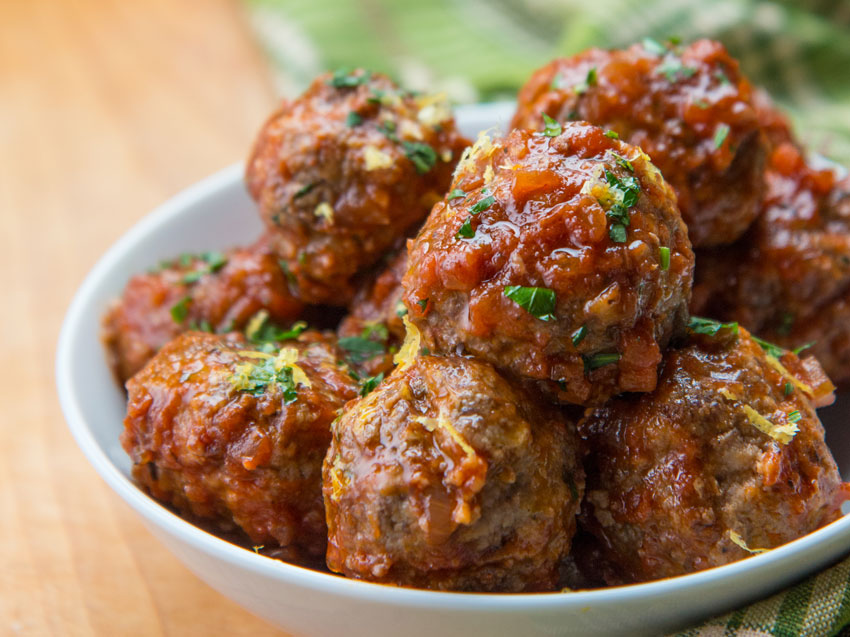

Meatballs

This recipe, Italian Meatballs, is taken from www.allrecipes.com and can be prepared with spaghetti or eaten alone. As good as these meatballs are, they will never be as good as my mom's. Even if they are, I'm not allowed to say otherwise. The choice of baking the meatballs before putting them into the pasta sauce makes these meatballs melt in your mouth!
Ingredients
- 3 pounds lean ground beef
- 5 tablespoons ground oregano
- 5 tablespoons dried parsley, crushed
- 1 clove garlic, chopped
- 1 (1 ounce) package dry onion soup mix
- 2 cups Italian-style dry bread crumbs
- 3 (28 ounce) jars spaghetti sauce
Steps
- Preheat oven to 350 degrees F (175 degrees C). Lightly grease a 10x15 inch jelly-roll pan.
- In a large mixing bowl, combine ground beef, oregano, parsley and garlic. Mix in onion soup mix and seasoned bread crumbs. Mix thoroughly.
- Using a 1 ounce scoop, scoop and shape the meat mixture into balls. Place in the prepared pan and bake in a preheated oven for 1 hour or until meatballs are browned and cooked through.
- In a large pot over high heat, bring the spaghetti sauce to a boil and add cooked meatballs. Reduce heat and simmer for 4 hours.
Return To Home Page